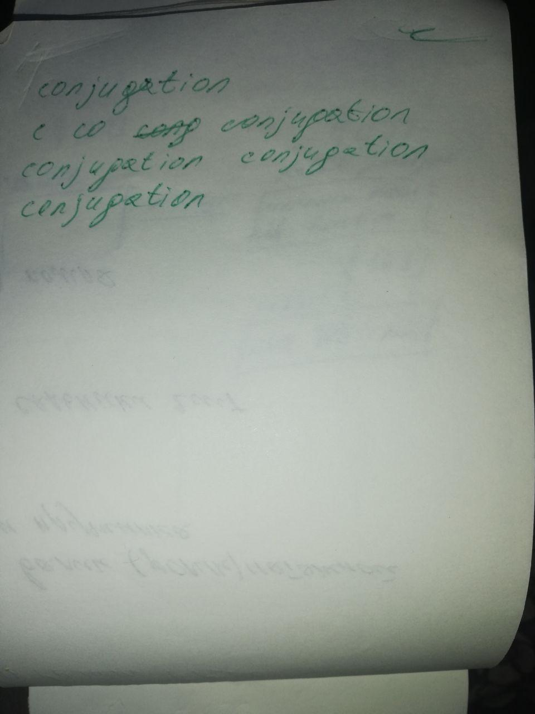

conjugation c co con conj conju conjug conjuga conjugat conjugati conjugatio conjugation conjugation
wi-fi. And just make sure we understand Now, if you have to keep a lot of things on - a lot of files videos or music and different pieces of equipment that you have in order to explain what the problems is. So, we're going to start with the actual hardware, with the actual things.
from good people who want you. All in pursuit of someone who arguably does not.
It's time someone looked you in the eye and told it to you staight.
Do you want to watch American TV and movies without subtitles?